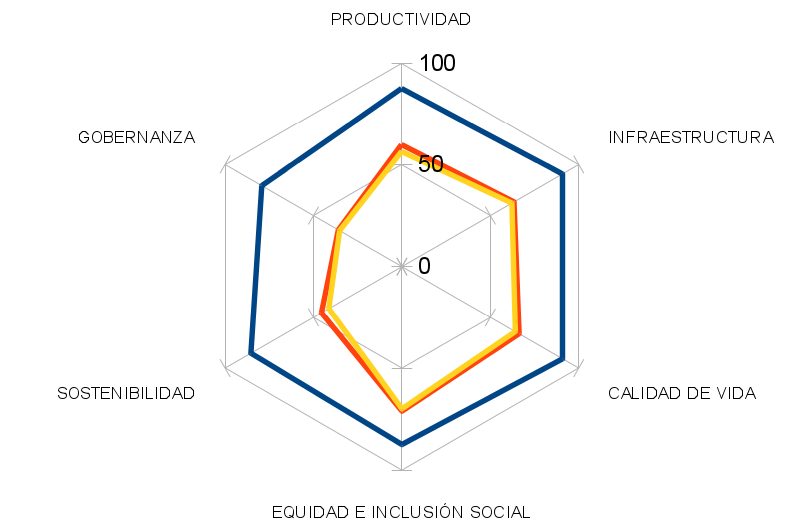
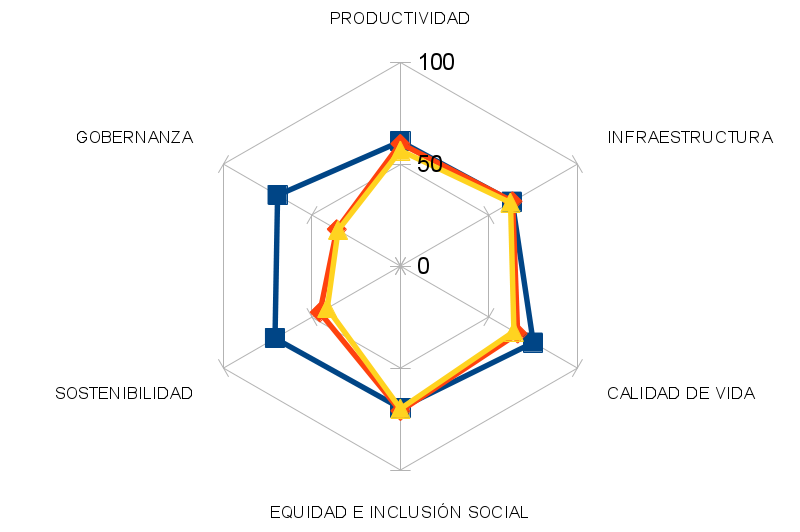
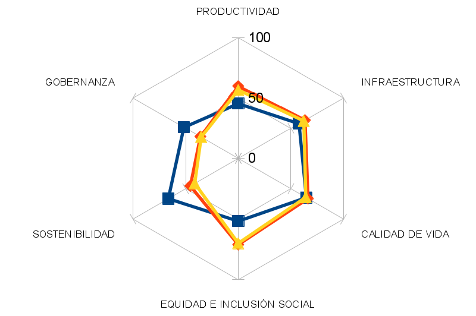
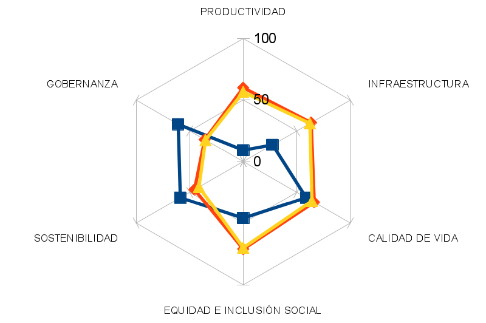
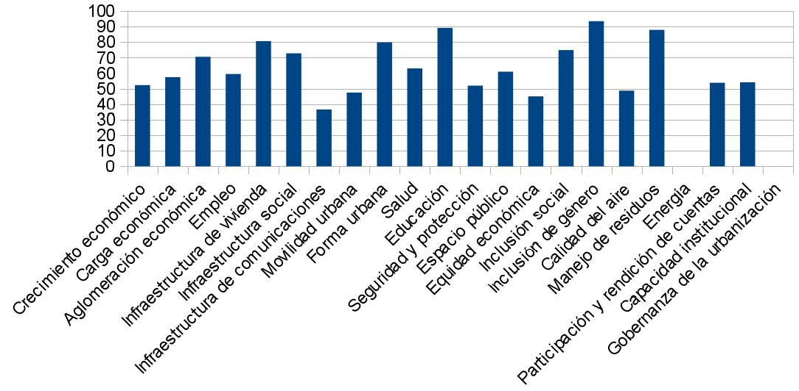

En 2012 el programa de Naciones Unidas para los Asentamientos Humanos (ONU-Hábitat) presentó un nuevo enfoque para estudiar, entender y planear el desarrollo de las ciudades en todo el mundo: la iniciativa de ciudades prósperas. Desde este enfoque para que una ciudad camine adecuadamente debe andar sobre una rueda perfecta, la rueda de la prosperidad que contiene seis ejes: productividad, infraestructura, calidad de vida, equidad e inclusión, sostenibilidad ambiental y gobernanza.
Con esta iniciativa se desarrolló una metodología que permite por un lado medir las cualidades de las ciudades enfocadas al desarrollo de políticas que puedan incidir en ellas, y por otro una comparabilidad mundial que propicia el aprendizaje constante de las ciudades entre si: el Índice de Prosperidad Urbana o CPI por sus siglas en inglés. En 2015 ONU-Hábitat publicó el Global City Report donde presenta resultados para 60 ciudades en todos los continentes y de una diversidad de condiciones y países. A su vez en México desarrollaron la medición del CPI en 152 municipios en 2016, en una alianza financiada por INFONAVIT quien difundirá los informes completos proximamente.
Panorama General
El Índice de Prosperidad Urbana para Torreón, es de 55.51, mientras la Zona Metropolitana de la Laguna es de 53.33, ambos cayendo en una escala global de prosperidad “moderadamente débil”. En esta categoría se encuentran ciudades como Sao Paulo en Brasil, Bangkok en Tailandia, Manila en Filipinas, Quito en Ecuador o Yerevan en Armenia.
De las 60 ciudades incluidas en el Global City Report de 2015, Oslo presenta el mayor CPI con un puntaje de 86.76 compartiendo la categoría de factores muy sólidos con Copenahue, París , Viena entre otras. Montreal, Berlin o Tokio son ciudades con factores sólidos de prosperidad, mientras las ciudades con factores moderadamente sólidos son principalmente latinoamericanas encabezadas por Buenos Aires y Ciudad de México. El siguiente nivel en el que se encuentra nuestra ciudad es compartido por ciudades asiáticas, europeas del este y latinoamericanas, mientras los factores débiles se presentan principalmente en ciudades africanas, entre ellas Addis Abeba, capital etiope que es la de menor calificación del reporte con 36.72.
La prosperidad urbana de Torreón
Productividad: El crecimiento económico medido por el producto urbano per cápita es el factor más débil de esta dimensión con una calificación de 52,26, sin embargo destaca que este indicador muestra una gran diferencia respecto a la zona metropolitana que alcanza un 43.73. La densidad económica que relaciona la producción del municipio con su extensión territorial urbana, tiene una calificación de 70.49, siendo una de las principales fortalezas de nuestra ciudad según el estudio.
Infraestructura: Torreón recibe una calificación moderadamente fuerte de 63.4, sobresaliendo la infraestructura de vivienda (80.63) y la forma urbana (79.83) que considera que tan accesible es una ciudad a peatones y ciclistas. Sin embargo infraestructura de comunicaciones (36.29) y movilidad urbana (47.47) marcada por la falta de transporte masivo y las fatalidades de tránsito se muestran como factores débiles de nuestra ciudad.
Calidad de vida: es una dimensión moderadamente fuerte, sobresaliendo educación como una gran fortaleza (89.09) por un alta alfabetización y escolaridad. Los factores de salud se encuentran en un rango medio al igual que la accesibilidad a espacios públicos. El factor de seguridad y protección medido con la tasa de homicidios de 2014 aun mostraba un reto para Torreón.
Equidad e inclusión social: es nuestra dimensión más sólida, sobresaliendo la inclusión de género en la educación con 93.47. Sin embargo la pobreza y la desigualdad medida en equidad económica sigue siendo una asignatura pendiente de la mayoría de las ciudades latinoamericanas.
Sostenibilidad ambiental: es uno de los principales retos de acuerdo al estudio de ONU Hábitat, si bien hay una fortaleza en el manejo de residuos sólidos (87.86), ln calidad del aire muestra una calificación de 45. La proporción de energía renovable generada es mínima de acuerdo a este estudio, por ello es uno de los factores más débiles de nuestra ciudad.
Gobernanza y legislación urbana es la dimensión más débil de Torreón. Si bien muestra calificaciones medias en participación y rendición de cuentas y capacidad institucional, el más bajo es el factor de gobernanza en la urbanización, medido por la expansión urbana ya que para ONU Hábitat el crecimiento urbano es aceptable, siempre y cuando no sea mayor que la tasa de crecimiento de la población.
Escala Global de Properidad
| Resultados CPI | Factores del estado de Prosperidad | Nivel de intervención |
|---|---|---|
| 80-100 | Muy sólidos | Consolidar políticas urbanas |
| 70-79 | Sólidos | Consolidar políticas urbanas |
| 60-69 | Moderadamente sólidos | Fortalecer políticas urbanas |
| 50-59 | Moderadamente débiles | Fortalecer políticas urbanas |
| 40-49 | Débiles | Priorizar políticas urbanas |
| 10-39 | Muy débiles | Priorizar políticas urbanas |
Torreón y la ZML comparado a Oslo, Noruega

Torreón y la ZML comparado a Ciudad de México

Torreón y la ZML comparado a Manila, Filipinas

Torreón y la ZML comparado a Addis Adeba, Etiopía

Torreón y sus factores de properidad

Fuentes
- INFONAVIT – ONU Hábitat - SEDATU (2016), Índice Básico d ellas Ciudades Prósperas. Informe final municipal: Torreón, Coahuila de Zaragoza.
- ONU Hábitat (2015), Global City Report.